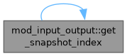
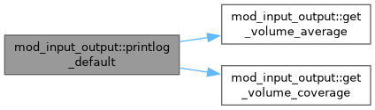
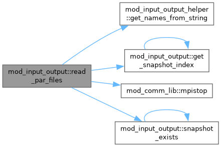
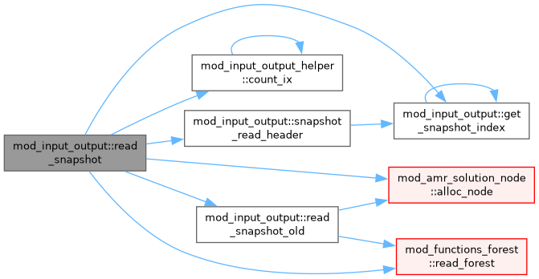
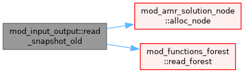
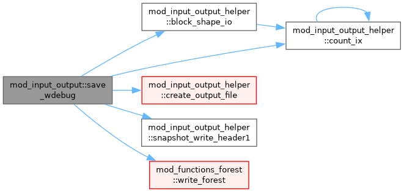
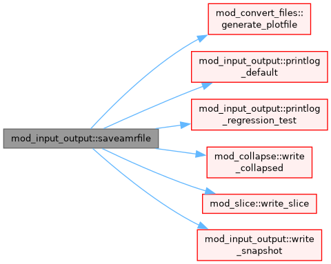
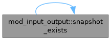
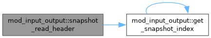
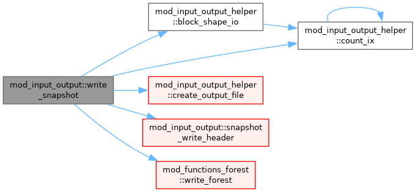

Module for reading input and writing output. More...
Functions/Subroutines | |
| subroutine | read_arguments () |
| Read the command line arguments passed to amrvac. | |
| subroutine | read_par_files () |
| Read in the user-supplied parameter-file. | |
| subroutine | get_fields_string (line, delims, n_max, fields, n_found, fully_read) |
| Routine to find entries in a string. | |
| subroutine | saveamrfile (ifile) |
| logical function | snapshot_exists (ix) |
| integer function | get_snapshot_index (filename) |
| subroutine, public | snapshot_write_header (fh, offset_tree, offset_block) |
| Write header for a snapshot. | |
| subroutine | snapshot_read_header (fh, offset_tree, offset_block) |
| Read header for a snapshot. | |
| subroutine | write_snapshot |
| subroutine | debug_alloc (n, names) |
| Enable the debug field dump: register n named slots. Capture fields with ps(igrid)wdebug(...,islot) anywhere in a block loop (lazy per-block allocation at the capture site), then flush with save_wdebug. | |
| subroutine | save_wdebug (suffix) |
| Flush ps(:)wdebug to a standalone cell-centred .dat (no staggered), readable by the standard AMRVAC .dat readers. Collective; call at a barrier-safe point (end of a step), NOT inside a block loop. | |
| subroutine | read_snapshot |
| Routine to read in snapshots (.dat files). When it cannot recognize the file version, it will automatically try the 'old' reader. | |
| subroutine | read_snapshot_old () |
| subroutine | printlog_default |
| Write volume-averaged values and other information to the log file. | |
| subroutine | printlog_regression_test () |
| Print a log that can be used to check whether the code still produces the same output (regression test). | |
| subroutine | get_volume_average (power, mode, volume) |
| Compute mean(w**power) over the leaves of the grid. The first mode (power=1) corresponds to the mean, the second to the mean squared values and so on. | |
| subroutine | get_volume_coverage (vol_cov) |
| Compute how much of the domain is covered by each grid level. This routine does not take a non-Cartesian geometry into account. | |
| subroutine | get_volume_average_func (func, f_avg, volume) |
| Compute the volume average of func(w) over the leaves of the grid. | |
| subroutine | get_global_maxima (wmax, psa) |
| Compute global maxima of iw variables over the leaves of the grid. | |
| subroutine | get_global_minima (wmin, psa) |
| Compute global minima of iw variables over the leaves of the grid. | |
Variables | |
| character(len=name_len), dimension(:), allocatable | wdebug_names |
| debug field-dump variable names (set by debug_alloc, used by save_wdebug) | |
| integer, dimension(3), parameter | compatible_versions = [3, 4, 5] |
| List of compatible versions. | |
| integer | nw_found |
| number of w found in dat files | |
| character(len= *), parameter | fmt_r = 'es16.8' |
| character(len= *), parameter | fmt_r2 = 'es10.2' |
| character(len= *), parameter | fmt_i = 'i8' |
Detailed Description
Module for reading input and writing output.
Function/Subroutine Documentation
◆ debug_alloc()
| subroutine mod_input_output::debug_alloc | ( | integer, intent(in) | n, |
| character(len=*), dimension(n), intent(in) | names ) |
Enable the debug field dump: register n named slots. Capture fields with ps(igrid)wdebug(...,islot) anywhere in a block loop (lazy per-block allocation at the capture site), then flush with save_wdebug.
Definition at line 2245 of file mod_input_output.t.
◆ get_fields_string()
| subroutine mod_input_output::get_fields_string | ( | character(len=*), intent(in) | line, |
| character(len=*), intent(in) | delims, | ||
| integer, intent(in) | n_max, | ||
| character(len=*), dimension(n_max), intent(inout) | fields, | ||
| integer, intent(inout) | n_found, | ||
| logical, intent(out), optional | fully_read ) |
Routine to find entries in a string.
- Parameters
-
[in] line The line from which we want to read [in] delims A string with delimiters. For example delims = " ,'"""//char(9) [in] n_max Maximum number of entries to read in [in,out] n_found Number of entries found [in,out] fields Fields in the strings
Definition at line 1745 of file mod_input_output.t.
◆ get_global_maxima()
| subroutine mod_input_output::get_global_maxima | ( | double precision, dimension(nw), intent(out) | wmax, |
| type(state), dimension(max_blocks), target | psa ) |
Compute global maxima of iw variables over the leaves of the grid.
- Parameters
-
[out] wmax The global maxima
Definition at line 2991 of file mod_input_output.t.
◆ get_global_minima()
| subroutine mod_input_output::get_global_minima | ( | double precision, dimension(nw), intent(out) | wmin, |
| type(state), dimension(max_blocks), target | psa ) |
Compute global minima of iw variables over the leaves of the grid.
- Parameters
-
[out] wmin The global maxima
Definition at line 3019 of file mod_input_output.t.
◆ get_snapshot_index()
| integer function mod_input_output::get_snapshot_index | ( | character(len=*), intent(in) | filename | ) |
Definition at line 1858 of file mod_input_output.t.

◆ get_volume_average()
| subroutine mod_input_output::get_volume_average | ( | integer, intent(in) | power, |
| double precision, dimension(nw), intent(out) | mode, | ||
| double precision, intent(out) | volume ) |
Compute mean(w**power) over the leaves of the grid. The first mode (power=1) corresponds to the mean, the second to the mean squared values and so on.
- Parameters
-
[in] power Which mode to compute [out] mode The computed mode [out] volume The total grid volume
Definition at line 2883 of file mod_input_output.t.
◆ get_volume_average_func()
| subroutine mod_input_output::get_volume_average_func | ( | external pure double precision function(double precision, dimension(w_size), intent(in) w_vec, integer, intent(in) w_size) | func, |
| double precision, intent(out) | f_avg, | ||
| double precision, intent(out) | volume ) |
Compute the volume average of func(w) over the leaves of the grid.
- Parameters
-
[out] f_avg The volume average of func [out] volume The total grid volume
Definition at line 2948 of file mod_input_output.t.
◆ get_volume_coverage()
| subroutine mod_input_output::get_volume_coverage | ( | double precision, dimension(1:refine_max_level), intent(out) | vol_cov | ) |
Compute how much of the domain is covered by each grid level. This routine does not take a non-Cartesian geometry into account.
Definition at line 2922 of file mod_input_output.t.
◆ printlog_default()
| subroutine mod_input_output::printlog_default |
Write volume-averaged values and other information to the log file.
Definition at line 2711 of file mod_input_output.t.

◆ printlog_regression_test()
| subroutine mod_input_output::printlog_regression_test |
Print a log that can be used to check whether the code still produces the same output (regression test).
Definition at line 2842 of file mod_input_output.t.
◆ read_arguments()
| subroutine mod_input_output::read_arguments |
Read the command line arguments passed to amrvac.
Definition at line 39 of file mod_input_output.t.
◆ read_par_files()
| subroutine mod_input_output::read_par_files |
Read in the user-supplied parameter-file.
How to apply dimensional splitting to the source terms, see Discretization
Which flux scheme of spatial discretization to use (per grid level)
Which type of the maximal bound speed of Riemann fan to use
Which time stepper to use
Which time integrator to use
type of curl operator
Limiter used for prolongation to refined grids and ghost cells
How to compute the CFL-limited time step. Options are 'maxsum': max(sum(c/dx)); 'summax': sum(max(c/dx)) and 'minimum: max(c/dx), where the summations loop over the grid dimensions and c is the velocity. The default 'maxsum' is the conventiontal way of computing CFL-limited time steps.
Definition at line 177 of file mod_input_output.t.

◆ read_snapshot()
| subroutine mod_input_output::read_snapshot |
Routine to read in snapshots (.dat files). When it cannot recognize the file version, it will automatically try the 'old' reader.
Definition at line 2365 of file mod_input_output.t.

◆ read_snapshot_old()
| subroutine mod_input_output::read_snapshot_old |
Definition at line 2570 of file mod_input_output.t.

◆ save_wdebug()
| subroutine mod_input_output::save_wdebug | ( | character(len=*), intent(in) | suffix | ) |
Flush ps(:)wdebug to a standalone cell-centred .dat (no staggered), readable by the standard AMRVAC .dat readers. Collective; call at a barrier-safe point (end of a step), NOT inside a block loop.
Definition at line 2262 of file mod_input_output.t.

◆ saveamrfile()
| subroutine mod_input_output::saveamrfile | ( | integer | ifile | ) |
Definition at line 1793 of file mod_input_output.t.

◆ snapshot_exists()
| logical function mod_input_output::snapshot_exists | ( | integer, intent(in) | ix | ) |
- Parameters
-
[in] ix Index of snapshot
Definition at line 1849 of file mod_input_output.t.

◆ snapshot_read_header()
| subroutine mod_input_output::snapshot_read_header | ( | integer, intent(in) | fh, |
| integer(mpi_offset_kind), intent(out) | offset_tree, | ||
| integer(mpi_offset_kind), intent(out) | offset_block ) |
Read header for a snapshot.
If you edit the header, don't forget to update: snapshot_write_header(), snapshot_read_header(), doc/fileformat.md, tools/python/dat_reader.py
- Parameters
-
[in] fh File handle [out] offset_tree Offset of tree info [out] offset_block Offset of block data
Definition at line 1888 of file mod_input_output.t.

◆ snapshot_write_header()
| subroutine, public mod_input_output::snapshot_write_header | ( | integer, intent(in) | fh, |
| integer(kind=mpi_offset_kind), intent(in) | offset_tree, | ||
| integer(kind=mpi_offset_kind), intent(in) | offset_block ) |
Write header for a snapshot.
If you edit the header, don't forget to update: snapshot_write_header(), snapshot_read_header(), doc/fileformat.md, tools/python/dat_reader.py
- Parameters
-
[in] fh File handle [in] offset_tree Offset of tree info [in] offset_block Offset of block data
Definition at line 1873 of file mod_input_output.t.
◆ write_snapshot()
| subroutine mod_input_output::write_snapshot |
Definition at line 2072 of file mod_input_output.t.

Variable Documentation
◆ compatible_versions
| integer, dimension(3), parameter mod_input_output::compatible_versions = [3, 4, 5] |
List of compatible versions.
Definition at line 17 of file mod_input_output.t.
◆ fmt_i
| character(len=*), parameter mod_input_output::fmt_i = 'i8' |
Definition at line 31 of file mod_input_output.t.
◆ fmt_r
| character(len=*), parameter mod_input_output::fmt_r = 'es16.8' |
Definition at line 29 of file mod_input_output.t.
◆ fmt_r2
| character(len=*), parameter mod_input_output::fmt_r2 = 'es10.2' |
Definition at line 30 of file mod_input_output.t.
◆ nw_found
| integer mod_input_output::nw_found |
number of w found in dat files
Definition at line 20 of file mod_input_output.t.
◆ wdebug_names
| character(len=name_len), dimension(:), allocatable mod_input_output::wdebug_names |
debug field-dump variable names (set by debug_alloc, used by save_wdebug)
Definition at line 14 of file mod_input_output.t.
Generated by